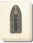

Requires
- Arts: 
Effects
- Enables Advanced Armour-piercing Shells
Description
As he plummets down,
I see my enemy's face.
Water's cold embrace.
There is a race between the cunning of armourers and the cunning of gunsmiths. Both seek advantage and, for a while, each leads in the race. But their struggle is such that they are chained together, and they are doomed to cross the finish line in a deadly embrace, neither able to break the other's will to win.